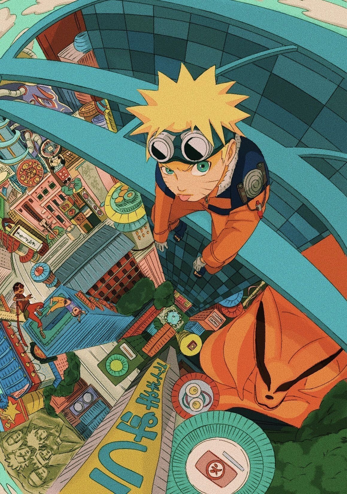

Yuto Kohata
Student at UC Berkeley
Interested in machine learning, software engineering, and individual investing.
Hi! I'm Yuto, a computer science student at UC Berkeley. I enjoy building machine learning applications, developing algorithmic trading systems as an individual investor, and working on projects that solve real-world problems. Welcome to my personal website!
Hobbies & Interests
Individual Investing
Studying markets and building algorithmic trading systems like Project Ceres.
Photography
Capturing everyday moments, with a strong preference for monochrome photos.

Poker
Enjoying strategic gameplay and decision-making.
Things I enjoy working on:
- Building evaluation systems for medical LLMs (Matsuo-Iwasawa Lab)
- Creating computer vision apps for healthcare using YOLO11 (EpiNu)
- Structuring complex real estate data using AI (estie)
Background & Skills
- Machine Learning: LLMs, YOLO11, Predictive Modeling
- Software Engineering: AI Solutions, Algorithmic Trading Systems
- Web & Tools: Python, TypeScript, React, Git